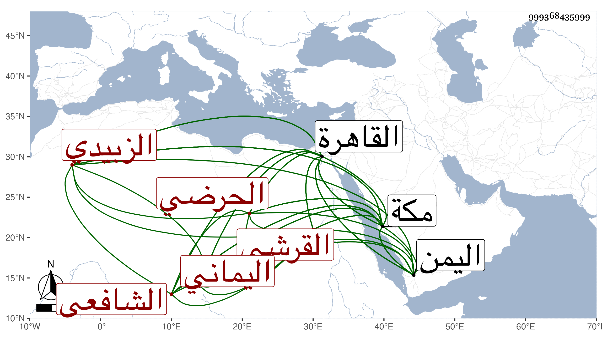

0902Sakhawi.DawLamic.ITO20230111-ara1.EIS1600.999368435999
Biography ID: 999368435999
323
أحمد بن محمد بن أبي بكر بن يحيى الشهاب القرشي اليماني الحرضي ثم الزبيدي الشافعي نزيل القاهرة ثم مكة ويعرف بالزبيدي . ولد سنة ثمان وأربعين وثمانمائة تقريبا وتفقه في بلاده بالفقيه عمر القمني أخذ عنه الإرشاد لشيخه ابن المقري قراءة وسماعا وأجاز له في سنة سبع وستين ، وقدم القاهرة فقرأ القراءات فيما أخبرني به على إمام الأزهر النوري وعبد الدائم والشهاب السكندري وابن كزلبغا ثم على الزين جعفر السنهوري ولازم الزين زكريا وحمل عنه شرحه للبهجة والجوجري وقرأ عليه الإرشاد أيضا ووصفه بالشيخ الفاضل العالم الكامل وقال قرأه بفهم ودراية بحيث اطلع على خباياه وفوائده واتضحت له معانيه مع تقييد شوارده وحصل شرحه له وقرأ عليه وسمع قطعة منه ، وقال إنه كان السبب في تأليفه له فطالما سأل فيه ووصفه بالفقيه الفاضل المقرئ المجود المفنن وأذن له في إفادتهما وذلك في سنة ثمان وسبعين وكذا أخذ عن ابن قرقماس وسمع على جماعة من المسندين لازمني بالقاهرة ثم بمكة حتى قرأ علي شرحي على ألفية الحديث وسمع القول البديع وحصلهما مع شرح الهداية وقرأ قطعة منه وغيرها من تصانيفي وغيرها وكتبت لهم إجازة حسنة وتصدى بمكة لإقراء المبتدئين وانتفعوا به في القراءات وفي العربية مع خير وسكون وتقنع وإقبال على شأنه ومحبة في العلم وأهله وإرفاد للفقراء بعيشه في بعض الأوقات ولكنه جامد الحركة ، وقد قدم القاهرة في أثناء سنة ثمان وثمانين ثم عاد لمكة وسافر منها إلى اليمن وأخذ منه رأس علمائه الفقيه يوسف المقري شرحي على الألفية ونعم الرجل ، ثم لما تزايدت فاقته سيما حين الغلاء بمكة في سنة ثمان وتسعين عاد إلى اليمن لطف الله به .
